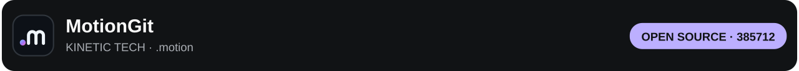

Download
Choose the English or Chinese .motion below.

MotionGit .motion video template (ZIP). Editable animation source and an included production guide. Silver type, amber light and mechanical motion.
Choose the English or Chinese .motion below.
Open the ordinary ZIP in a new folder.
Read its README and continue the template workflow you already use.
Chinese showcase highlights. Demonstration media is separate from the source package.
1920 × 1080 · 60fps · Landscape · 23 native units + four flexible expressions
Read the .motion specification · Included source